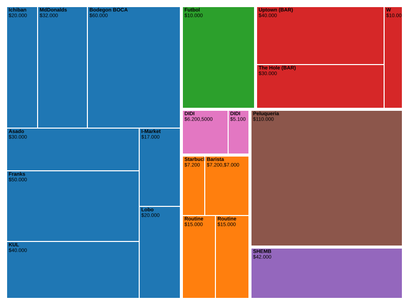

<!-- Copiá esto dentro de tu archivo tp.html -->
<section style="max-width: 800px; margin: 0 auto; padding: 20px;">
    
    <div class="flourish-embed flourish-scatter" data-src="visualisation/30072464">
        <script src="https://public.flourish.studio/resources/embed.js"></script>
        <noscript>
            
        </noscript>
    </div>
    <br><br>
    <div style="min-height:462px" id="datawrapper-vis-tNFiK">
      <script type="text/javascript" defer src="https://datawrapper.dwcdn.net/tNFiK/embed.js" charset="utf-8" data-target="#datawrapper-vis-tNFiK"></script>
      <noscript>
        
      </noscript>
    </div>
    <br><br>
    <h2>¿Cómo se distribuyó mi dinero en los locales específicos dentro de cada categoría?</h2>
    <div style="text-align: center;">
      
    </div>
    <br><br>
    <h2>¿En qué días del mes se produjeron los mayores picos de gasto por categoría?</h2>
    <div style="text-align: center; width: 100%;">
      <iframe 
        title="Gastos Agosto 2026 - Power BI" 
        width="100%" 
        height="600" 
        src="https://app.powerbi.com/view?r=eyJrIjoiZDY1ODZhMjgtOTg5ZS00NTMxLWI1M2MtODdlYjE3NDIxZjFjIiwidCI6ImExZjUwYTk3LTIxYzAtNDlhNy1hOWQ0LWYyNDRlYmI0MmRhNyIsImMiOjR9" 
        frameborder="0" 
        allowFullScreen="true">
      </iframe>
    </div>

</section>
